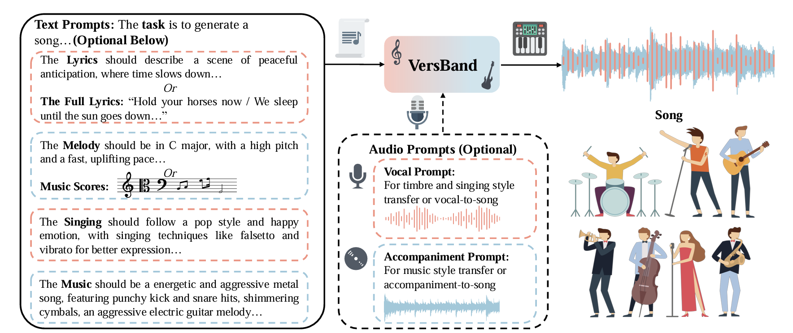
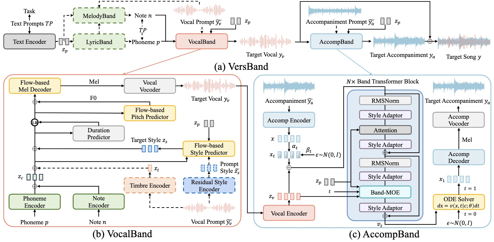

Abstract. Song generation focuses on producing controllable high-quality songs based on various prompts. However, existing methods struggle to generate vocals and accompaniments with prompt-based control and proper alignment. Additionally, they fall short in supporting various tasks. To address these challenges, we introduce VersBand, a multi-task song generation framework for synthesizing high-quality, aligned songs with prompt-based control. VersBand comprises these primary models: 1) VocalBand, a decoupled model, leverages the flow-matching method for generating singing styles, pitches, and mel-spectrograms, allowing fast, high-quality vocal generation with style control. 2) AccompBand, a flow-based transformer model, incorporates the Band-MOE, selecting suitable experts for enhanced quality, alignment, and control. This model allows for generating controllable, high-quality accompaniments aligned with vocals. 3) Two generation models, LyricBand for lyrics and MelodyBand for melodies, contribute to the comprehensive multi-task song generation system, allowing for extensive control based on multiple prompts. Experimental results demonstrate that VersBand performs better over baseline models across multiple song generation tasks using objective and subjective metrics.

In this paper, we introduce VersBand, a multi-task song generation framework for synthesizing high-quality, aligned songs with prompt-based control. Following the human perception that accompaniment complements vocal melody with complex harmonic and rhythmic structure, we generate them separately. To achieve fast and high-quality vocal generation with control, we design a decoupled model VocalBand, predicting singing styles, pitches, and mel-spectrograms based on the flow-matching method. Based on the complex nature of music, we introduce a flow-based transformer model AccompBand to generate high-fidelity, controllable, aligned accompaniments. We design Band-MOE (Mixture of Experts), selecting suitable experts for enhanced quality, alignment, and control. Additionally, we add two generation models, LyricBand for lyrics and MelodyBand for melodies, contributing to the comprehensive multi-task song generation system. Our experiments on open-source and web-crawled bilingual song datasets show VersBand can generate high-quality songs with control, outperforming baseline models in multiple song generation tasks.

In this section, we present generated samples of song generation with full prompts. We input full lyrics, music scores, singing and music styles as text prompts to generate songs via VocalBand and AccompBand.
| Lyrics | Singing Styles | Music Styles | Generated Vocal | Generated Accompaniment | Generated Song |
|---|---|---|---|---|---|
| 确定，你就是我的唯一，独自对着电话说我爱你 | A male vocalist sings this pop song with a soft and melodic tone, skillfully incorporating mixed voice to enhance its emotional depth. The performance is emotional, sentimental, pensive, melancholic, and romantic. It carries a passionate and heartfelt mood. | The melody is played by the electric guitar and keyboard, creating a vibrant and harmonious blend, while the bass guitar provides a steady background groove. The rhythm is driven by a simple acoustic drum beat, adding a rhythmic foundation. The overall atmosphere is perfectly suited for the opening theme of a teenage sitcom. | |||
| 悟道修炼，不问一生缘劫，白纸画卷寥寥几笔绘江湖深浅 | A female vocalist sings melodically as the lead, delivering a bright and expressive performance. Her tone is relaxed and easygoing. | This music is accompanied by percussion playing a simple beat. The bass plays the root notes of the chords. A guitar plays staccato chords in the background. | |||
| 我受够了等待，你所谓的安排 | A soft female vocal delivers an emotional performance. The singing style is delicate yet expressive, with a breathy technique and smooth tone that conveys depth and feeling. The vocal incorporates subtle dynamics and emotive phrasing. | The background features acoustic guitar playing a melodic line, complemented by a bass guitar in the background. A basic acoustic drum beat sets a steady rhythm, creating a relaxed atmosphere suitable for a romantic piece. | |||
| 怕你飞远去，怕你离我而去，原来你 | A female vocal delivers an emotional performance. She sings with a mixed voice technique for emotional delivery. | This is accompanied by percussion playing a simple beat. The bass plays the root notes of the chords. An acoustic guitar plays chords. A synth plays the bass notes in the background. The mood of this song is emotional. |
In this section, we present generated samples of singing style transfer. We input full lyrics, music scores, singing styles (optional), music styles as text prompts, and vocal prompts for transferring timbre and styles (or only personalized styles when inputting detailed singing styles in text prompts), to generate songs via VocalBand and AccompBand.
| Lyrics | Singing Styles | Music Styles | Vocal Prompt | Generated Vocal | Generated Song |
|---|---|---|---|---|---|
| 怎么忍心怪你犯了错，是我给你自由过了火 | \ | The tempo is slow with a piano accompaniment and a violin harmony. The song is soft, mellow, poignant, emotional, sentimental, romantic, melancholic and pensive. The rhythm creates an emotional atmosphere. | |||
| Now I know there's another world. Butterflies floating in the air. There is someone out there | The pop singing features a female vocal that delivers an engaging performance, filled with expressive dynamics and an inviting tone that captivates listeners, evoking a sense of wonder and possibility. | This music piece showcases a medium tempo with a catchy electric guitar riff, smooth bass line, steady drumming, keyboard harmony, and rhythmic acoustic guitar strumming. The music is soft, rich, full-bodied, emphatic, and pleasant, embodying a Western Classical style. | |||
| 你不了解的爱 | \ | This is accompanied by percussion playing a simple beat. The bass plays the root notes of the chords. A guitar plays staccato chords in the background. The mood of this song is romantic. The rhythm creates an emotional atmosphere. This song can be played in a romantic movie. | |||
| 如果今天我们就要分离，让我痛快的哭出声音 | The singing features a male vocalist singing expressively, infusing the performance with deep emotion that complements the overall feel of the R&B piece. | The music consists of shimmering hi-hats, energetic crash cymbals, a wide acoustic rhythm guitar melody, shimmering shakers, punchy snares, and a mellow bass. This arrangement creates an emotional vibe. |
In this section, we present generated samples of music style transfer. We input accompaniment prompt with GT vocal to generate songs via AccompBand.
| GT Vocal | Accompaniment Prompt | Generated Accompaniment | Generated Song |
|---|---|---|---|
In this section, we present generated samples of ocal-to-song generation. We input GT vocal, and music styles as text prompt to generate songs via AccompBand.
| Music Styles | GT Vocal | Generated Accompaniment | Generated Song |
|---|---|---|---|
| The pop music includes tinny bells, synth lead melodies, wooden percussion, shimmering hi-hats, and mellow piano chords. This combination produces a happy, joyful, and fun vibe, reminiscent of something you might hear in a club setting. | |||
| The slow pop music is characterized by a male voice singing the main melody, accompanied by programmed percussion playing a simple beat and a synth playing a repetitive two-note phrase. This creates a romantic mood suitable for a romantic movie. | |||
| The rock music features a wide electric guitar melody, groovy bass guitar, and punchy kick and snare hits, creating an addictive and passionate sound. This arrangement embodies an emotional aura. | |||
| The pop music includes tinny bells, synth lead melodies, wooden percussion, shimmering hi-hats, and mellow piano chords. This combination produces a happy, joyful, and fun vibe, reminiscent of something you might hear in a club setting. |
In this section, we present generated samples of accompaniment-to-song generation. We input GT accompaniment, and lyrics, singing styles as text prompt to generate songs via VocalBand.
| Lyrics | Singing Styles | GT Accompaniment | Generated Vocal | Generated Song |
|---|---|---|---|---|
| 回想我们走过的那些曲折，只有我们两个别人没法懂得，你说你累了 | A vocalist sings the melody with an emotional tone. The vocal employs mixed voice techniques for a seamless blend of power and delicacy, along with glide techniques to create smooth and expressive transitions between notes. The performance is deeply emotive, perfectly capturing the song’s emotional essence. | |||
| 那么容易提起，我爱过你 | A male vocalist delivers an emotional and heartfelt performance, singing the melody with depth and expressiveness. The vocal tone is rich and dynamic, emphasizing the song’s emotional core. The delivery is nuanced, with a focus on conveying intensity, perfectly capturing the essence of the pop song. | |||
| 我想我已慢慢喜欢你，因为我拥有爱情的勇气，我任性投入你给的恶作剧 | A female vocalist sings melodically as the lead, delivering an emotional and expressive performance. The singing incorporates glide techniques, with smooth transitions between notes that enhance the fluidity and emotional depth of the melody. The tone is heartfelt and evocative, perfectly capturing the easygoing yet emotional atmosphere, making it ideal for the opening theme of a teenage drama TV series. | |||
| 看起来很孤单 | A female vocalist sings melodically in the lead with a subdued and introspective tone, capturing a sense of loneliness and emotional depth. The delivery is restrained yet expressive, with subtle nuances that emphasize the melancholy and reflective mood, aligning with the mellow atmosphere of the piece. |
In this section, we present generated samples of ablation study on VersBand. We input different prompts to generate songs via LyricBand, VocalBand, and AccompBand. Note that LyricBand and MelodyBand are primarily used to extend the application scenarios to more user outputs, while in other cases, users provide their own pre-existing lyrics and music scores. Therefore, we only demonstrate their effects in this section.
In this part, we present generated samples of song generation (w/o lyrics). We input lyric prompts, music scores, singing and music styles as text prompts to generate songs via LyricBand, VocalBand, and AccompBand.
| Lyric Prompts | Singing Styles | Music Styles | Generated Lyrics | Generated Vocal | Generated Accompaniment | Generated Song |
|---|---|---|---|---|---|---|
| Generate a Chinese lyric about longing and admiration, capturing a gentle and tender mood, with elements of a beloved smile, breeze, and melody. The lyric should be approximately 5 seconds long when sung. | The recording showcases a male vocalist singing in a mixed voice technique, delivering a emotional performance that evokes a sense of romantic and emotional depth. | The music features acoustic guitar playing a melodic line, supported by a bass guitar in the background. | 恋慕他的笑脸，在晚风浅唱如弦 |
In this subsection, we present generated samples of song generation (w/o notes). We input full lyrics, melody prompts, singing and music styles as text prompts to generate songs via MelodyBand, VocalBand, and AccompBand.
| Lyrics | Melody Prompts | Singing Styles | Music Styles | Generated Vocal | Generated Accompaniment | Generated Song |
|---|---|---|---|---|---|---|
| 哈哈哈哈哈哈哈哈哈 | Please create a Chinese song for a female singer, conveying a sorrowful emotion. The key should be B major, with a high pitch. | This pop singing features a female vocalist. Her easygoing singing style, invites listeners to relax. | This is a pop music piece. There is a keyboard playing the main melody. The acoustic guitar is playing a simple tune while the bass guitar plays in the background. The rhythm is provided by an acoustic drum beat. The atmosphere is easygoing. This piece could be used in the soundtrack of a romantic comedy movie. |
In this part, we present generated samples of song generation (w/o prompts). We input the minium input to generate songs via LyricBand, MelodyBand, VocalBand, and AccompBand.
| Generated Lyrics | Generated Vocal | Generated Accompaniment | Generated Song |
|---|---|---|---|
| 风吹过，梦不见寂寞相伴 | |||
| 墨痕又染袖，落笔星痕映千秋 |
@inproceedings{zhang-etal-2025-versatile,
title = "Versatile Framework for Song Generation with Prompt-based Control",
author = "Zhang, Yu and
Guo, Wenxiang and
Pan, Changhao and
Zhu, Zhiyuan and
Li, Ruiqi and
Lu, Jingyu and
Huang, Rongjie and
Zhang, Ruiyuan and
Hong, Zhiqing and
Jiang, Ziyue and
Zhao, Zhou",
editor = "Christodoulopoulos, Christos and
Chakraborty, Tanmoy and
Rose, Carolyn and
Peng, Violet",
booktitle = "Findings of the {A}ssociation for {C}omputational {L}inguistics: {EMNLP} 2025",
month = nov,
year = "2025",
address = "Suzhou, China",
publisher = "Association for Computational Linguistics",
url = "https://aclanthology.org/2025.findings-emnlp.13/",
doi = "10.18653/v1/2025.findings-emnlp.13",
pages = "195--219",
ISBN = "979-8-89176-335-7"
}